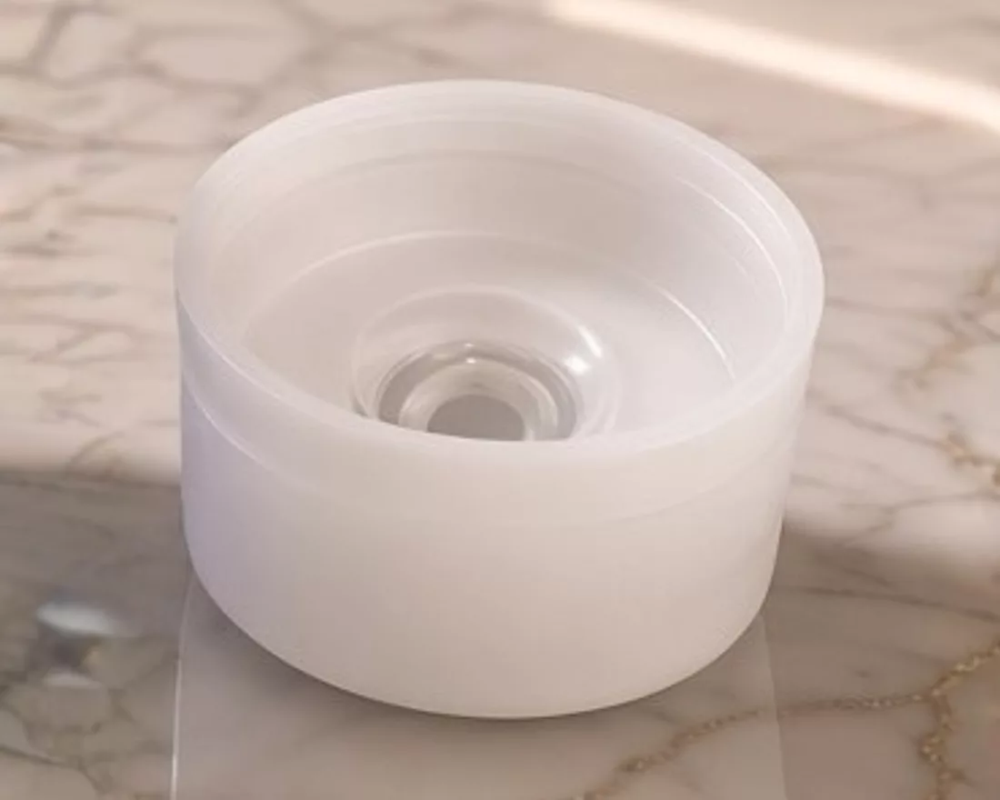

Le biberon pratique
Tout dedans. Rien autour.
Le biberon pratique : quatre accessoires en moins — doseur, mélangeur, obturateur, valve.
- Pas de doseur à transporter.
- Pas de mélangeur anti-grumeaux.
- Pas d’obturateur de tétine.
- Pas de valve anti-air.

01 · Le transport
Pourquoi un biberon classique prend-il autant de place dans le sac ?
BIBEON commence par prendre moins de place par lui-même, avant même de compter tout ce qu’il permet de laisser à la maison.
la boîte doseuse, à côté du BIBEON replié
replié, capuchon compris
environ, tout compris
une fois entièrement déplié
Son flacon replié reçoit directement la dose de lait en poudre pré-dosée : pas de boîte doseuse séparée à transporter. Petit dehors. Grand quand on en a besoin.
Moins de volume. Moins de poids. Un objet de moins dans le sac.
02 · Le doseur
Ce que la boîte doseuse supposait.
La transporter, aller et retour, même vide.La chercher au fond du sac.Transvaser, sans en mettre à côté.La laver au retour. La sécher.
La dose voyage dans le biberon.
le lait au tamis
03 · Les grumeaux
Comment éviter les grumeaux sans emporter un accessoire de plus ?
Une fois totalement déployés, les soufflets forment à l’intérieur du flacon une succession de creux. Pendant les secousses, les amas de poudre rencontrent cette géométrie, se fragmentent et se dispersent.
BIBEON agit comme son propre shaker.
Pas de mélangeur à emporter. Pas de grille à retirer. Rien à laver séparément.
04 · L’air
Et si on enlevait l’air, au lieu d’ajouter une valve ?
Pendant que bébé boit, le lait descend. BIBEON descend avec lui.
Les soufflets permettent d’abaisser progressivement le flacon jusqu’au niveau du liquide, réduisant ainsi le volume d’air restant au-dessus du lait. Moins d’air présent dans le biberon. Moins d’air susceptible d’être avalé pendant la tétée.
L’air ne se traite pas avec une pièce supplémentaire. On enlève simplement l’espace qui le contient.
05 · Le capuchon, court
Il enfonce la tétine. Il fait bloc.
Plus court que la tétine, il l’écrase et l’enfonce dans sa base : deux centimètres de mamelon gagnés.
Et il s’arrête sur le bord extérieur de la bague, serré dessus : bague, tétine et capuchon ne font plus qu’un bloc solidaire.
06 · Le bloc solidaire
Pourquoi manipuler trois pièces dehors quand une seule suffit ?
On le retire d’un seul geste. Les éléments restent ensemble. Rien à séparer, rien à poser individuellement, rien à rechercher pour remonter le biberon.
La tétine reste protégée à l’intérieur du capuchon. Elle n’est jamais manipulée directement avec les doigts : sans lavabo à portée, rien ne touche l’intérieur du biberon, tout passe par le bloc.
Tétine restée enfoncée ? On la déloge avec le bord du capuchon, jamais avec les doigts.
Une seule pièce à manipuler dehors. Rien de l’intérieur à toucher.
07 · Le capuchon, plat
Il obture. Il ne roule pas.
Son toit plat se plaque sur l’orifice de la tétine enfoncée : elle s’obture, ni lait ni air ne passent.
Et posé à l’envers, le bloc tient stable, sans rouler : la tétine reste tournée vers le ciel, à l’abri des souillures.

08 · L’étanchéité
Est-ce qu’un biberon pliable fuit dans le sac ?
Correctement fermé, BIBEON est hermétique.
Cette fermeture permet aussi de transporter la poudre pré-dosée directement dans le flacon, sans fuite de contenu sec. Et, au passage, l’enfoncement de la tétine fait disparaître environ 2 cm de hauteur.
Une fonction de fermeture. Une fonction de compacité. Une pièce de moins.
09 · Le lavage
Laver un biberon, est-ce forcément démonter une usine à gaz ?
À l’usage, BIBEON se résume à deux ensembles à manipuler : le flacon et le bloc solidaire bague–tétine–capuchon. Pas de valve, de grille ou d’insert supplémentaire à démonter et à faire sécher.
Les soufflets peuvent être abaissés puis redéployés pour accéder au fond, aux plis et aux recoins. Et le diamètre étroit du flacon permet au goupillon de travailler directement contre les parois.
On voit. On atteint. On nettoie.
Lavage à la main. Pas de lave-vaisselle. Pas d’ébullition.


10 · La légèreté
Quel poids peut-on mettre entre les petites mains de bébé ?
BIBEON pèse environ 35 g complet. Cette légèreté facilite aussi sa prise en main : peu de masse à soutenir, un corps étroit et une forme qui reste naturellement proche du contenu à mesure que le biberon s’abaisse.
Et faire aussi léger sans faire fragile a été l’un des défis de sa conception.
Léger ne signifie pas moins conçu. C’est précisément ce qui a été difficile à concevoir.
Le biberon pratique, finalement, c’est quoi ?
Ce n’est pas un capuchon intelligent qu’il faudrait admirer. Ni des soufflets qu’il faudrait venir étudier. C’est ce qu’ils permettent de ne plus subir.
- Moins lourd.
- Moins encombrant.
- Moins de pièces.
- Moins à démonter et à laver.
- Moins de grumeaux.
- Moins d’air à avaler.
- Moins de risques de fuite.
- Moins de gestes à faire dehors, pendant que bébé a faim.
BIBEON n’a pas été dessiné pour avoir davantage de fonctions visibles.
Il a été dessiné pour laisser moins de contraintes aux parents.
La boutique
Cinq coloris. À partir de 35 €.

Lin·Menthe·Rose·Lilas·Abricot
Point relais offert·domicile 3,50 €·retour offert sous 30 jours
Le biberon, l’R en moins®.